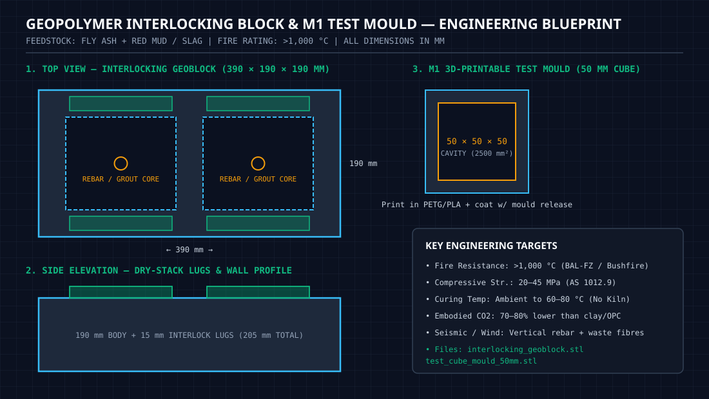

Turning Australia’s Coal Ash & Red Mud into Bushfire-Proof Infrastructure
Zero-Portland-cement, kiln-free geopolymer composites engineered for >1,000 °C fire resistance, termite/salt immunity, and multi-use deployment across utility assets, civil walls, and BAL-FZ construction.
Where the Waste Sits — & Why We Start with Black-Coal Fly Ash
Black-Coal Fly Ash (NSW & QLD)
- Locations: Hunter Valley / Central Coast (Eraring, Bayswater, Vales Point), Gladstone, Tarong, Collie (WA).
- Why start here: Rich in reactive silica & alumina—the gold-standard geopolymer feedstock.
- Easy Victoria access: Classified 20 kg bags are stocked at Victorian concrete suppliers (~$20/bag) for a repeatable M1 baseline.
Victorian Brown-Coal Ash & Red Mud
- Latrobe Valley (VIC): Loy Yang, Yallourn, Hazelwood. Higher calcium/sulfates—ideal for CO₂ carbonation curing or blended mixes.
- Alumina Red Mud (WA & QLD): >100 Mt stockpiled. Already alkaline (pH 10–13) and iron-rich (natural terracotta brick colour).
Solving the Activator Cost Problem (4 R&D Pathways)
Virgin sodium silicate + caustic soda is the main cost killer in geopolymers. Our R&D targets four cheaper pathways—including organic-chemistry levers rarely explored by civil engineers:
Uses spent industrial phosphoric acid. Delivers >1,200 °C heat resistance and superior electrical insulation (no mobile Na⁺ ions).
Bio-derived ligands (citrates, tannins, lignosulfonates) mobilise Al/Si at milder pH and slash water + activator dosage by 30–50%.
Cures alkaline wastes (red mud, slag, brown-coal ash) with flue-gas CO₂. Zero liquid activator and carbon-negative.
Uses red mud’s residual caustic + dissolved waste glass fines or wood ash to eliminate virgin sodium silicate.
Multi-Use Product Ladder (High Margin First)
Highest margin per kg of waste. Faster utility pilot approval than residential housing.
Dry-stackable 390×190×190 mm blocks with vertical rebar cores for wind/seismic stability.
Kiln-free, natural red-mud terracotta colour, full AS 3700 / Flame Zone certification.
Interlocking Geoblock & 3D-Printable M1 Test Mould

Bushfire Power-Pole Protection: Clamshell vs. Spray-On R&D
Two interlocking C-shells bolt or Band-It strap around the bottom 1.5–2 m of live poles in 10 minutes. Unlike flexible mesh wraps, rigid geopolymer resists whipper-snippers, cattle, and falling branches.
- No Rot Trap: Moulded 15 mm internal spacer ribs + open base let rainwater drain so timber breathes.
- Ember Collar: Mineral-wool top lip stops burning embers falling down the air gap.
- Weight for 2-Person Crews: Hollow/foamed geopolymer keeps each 1 m half-shell under ~25 kg.
Thick geopolymer mortar is too heavy for drones, but heavy-lift ag-drones (40–50 kg payload) could spray a thin 2-part phosphate/silicate mineral gel onto upper poles & cross-arms without a cherry-picker.
- Nozzle Clogging: Requires dual-nozzle external mixing (Part A activator + Part B fine ash/perlite slurry).
- Adhesion to Old Wood: Needs organic bio-tackifiers (lignosulfonate/tannin) to grip weathered timber.
- Ground Ute First: Trailer-mounted shotcrete pump is the practical stepping stone before drones.
Under-$150 Benchtop Validation Protocol
4 batches × 3 cubes (50 mm): Portland control, Alkaline baseline, Phosphate route, and Chemist’s organic/low-alkali variant.
Submerge cured cubes for 2 days. Pass = stays rock-hard with sharp corners (confirms true chemical polymerisation).
15-minute MAP-gas torch thermal shock test vs. Portland concrete control to verify zero spalling.
Crush in a 10–20t hydraulic press. Target >15 MPa (brick/paver) to >30 MPa (structural civil).
geopolymer-materials project folder.
Est. M1 Budget: ~$142 AUD